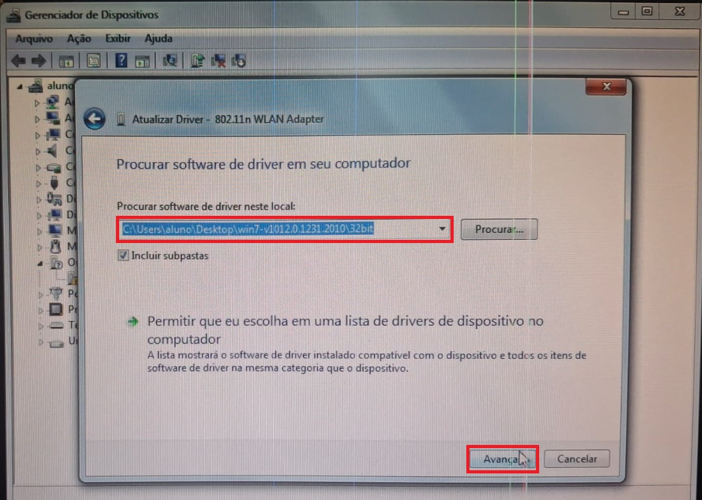

Drivers desatualizados ou corrompidos
O problema
Driver é o software que permite ao sistema operacional se comunicar com um componente de hardware, como a placa de vídeo, a placa de som, a placa de rede ou a impressora. Quando o driver está ausente, desatualizado ou corrompido, o dispositivo deixa de funcionar ou funciona mal: a imagem fica em baixa resolução, o som some, a rede não conecta ou surgem travamentos e telas azuis.
Possíveis causas
A falta do driver depois de formatar o computador, um driver corrompido por uma atualização interrompida ou por malware, e a instalação de um driver incompatível, de outra versão do sistema ou de outra arquitetura (32 ou 64 bits). Em computadores antigos, muitos fabricantes não lançam mais drivers para as versões novas do Windows.

Solução no Windows
Abra o Gerenciador de Dispositivos (botão direito no menu Iniciar). Dispositivos com um triângulo amarelo, ou listados em Outros dispositivos, estão sem driver. Se a placa de vídeo aparece como Adaptador de Vídeo Básico da Microsoft, o driver de vídeo não está instalado.
Baixe o driver no site do fabricante (do notebook, da placa-mãe, ou da NVIDIA, AMD e Intel para placas de vídeo). Se não souber qual é o dispositivo, abra as Propriedades > Detalhes > IDs de hardware e pesquise os códigos VEN (fabricante) e DEV (modelo). Evite programas que prometem atualizar todos os drivers de uma vez.
Se o problema começou depois de uma atualização de driver, use Propriedades > Driver > Reverter driver. Se o driver estiver corrompido, clique em Desinstalar dispositivo e reinicie.
Solução no Linux
No Linux, a maioria dos drivers já vem dentro do kernel (o núcleo do sistema), então muitos dispositivos
funcionam sem instalar nada. Os comandos lspci -k e lsusb mostram os
dispositivos e qual módulo (driver) cada um está usando; se a linha "Kernel driver in use" não aparecer,
o dispositivo está sem driver.
Para drivers proprietários, como os da NVIDIA e de algumas placas de rede sem fio, abra Programas e
Atualizações > Drivers adicionais, ou execute sudo ubuntu-drivers install. Manter o sistema
atualizado com sudo apt update && sudo apt upgrade também atualiza o kernel e os
drivers que vêm com ele.
Saiba mais
Veja como resolvemos o driver da placa de rede sem fio no laboratório na página Sem internet, ou pesquise um dos tutoriais em vídeo abaixo: